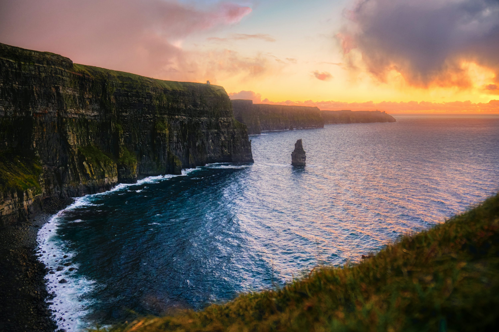
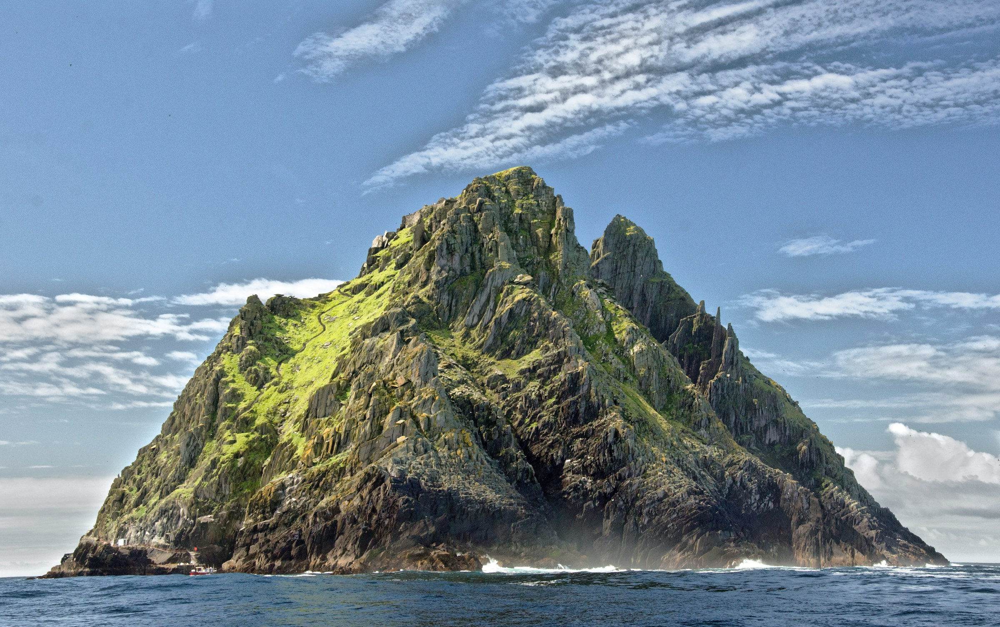
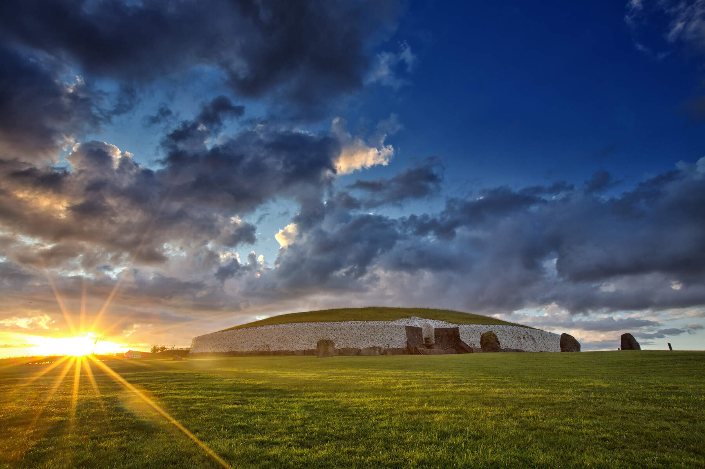
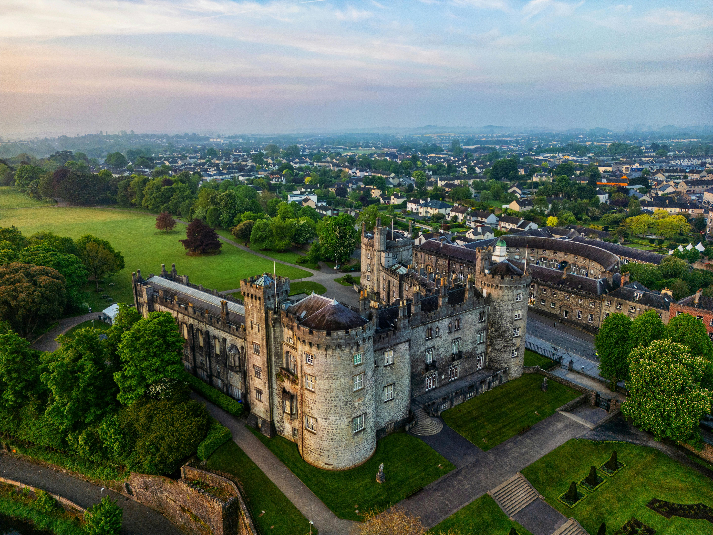
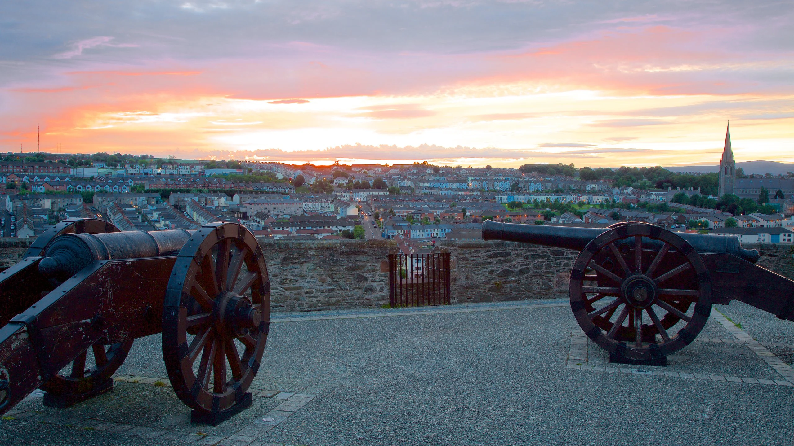

The Cliffs of Moher are sea cliffs located at the southwestern edge of the Burren region in County Clare, Ireland. They run for about 14 kilometres (9 miles).

Skellig Michael is a twin-pinnacled crag 11.6 kilometres (7.2 mi) west of the Iveragh Peninsula in County Kerry. Its twin island, Little Skellig (Sceilig Bheag), is smaller and inaccessible. The two islands were formed around 374–360 million years ago during a period of mountain formation. They were later separated from the mainland by rising water levels.

Newgrange is a prehistoric monument in County Meath in Ireland, placed on a rise overlooking the River Boyne, eight kilometres (five miles) west of the town of Drogheda. It is an exceptionally grand passage tomb built during the Neolithic Period, around 3100 BC,[3] making it older than Stonehenge and the Egyptian pyramids.

Kilkenny Castle is a castle in Kilkenny, Ireland, built in 1260 to control a fording-point of the River Nore and the junction of several routeways. It was a symbol of Norman occupation, and in its original 13th-century condition, it would have formed an important element of the town's defences with four large circular corner towers and a massive ditch, part of which can still be seen today on the Parade.

Derry's walls, also known as the Walls of Derry, were originally built by the Irish Society between 1613 and 1619, under the supervision of the London builder and architect Peter Benson. They were built with the intention of protecting the Scottish and English planters that had moved to Ulster as part of the Plantation of Ulster that had been established by James I.
